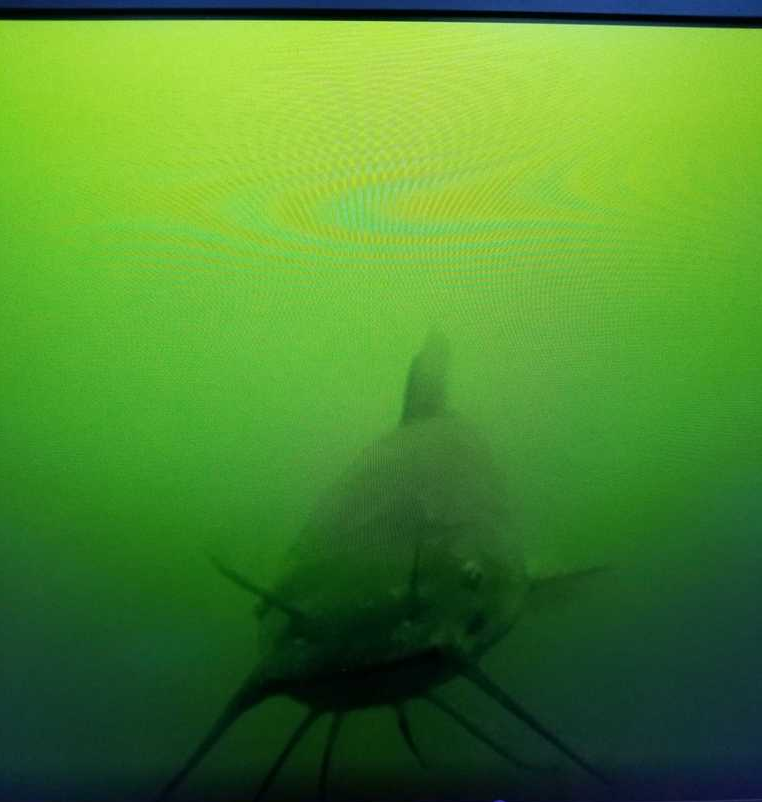
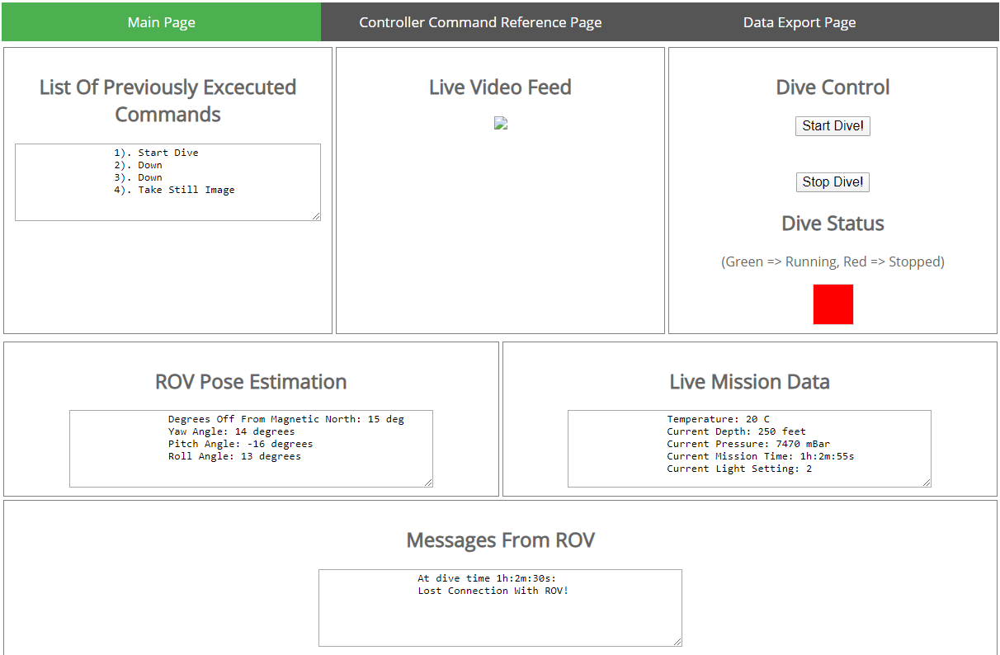
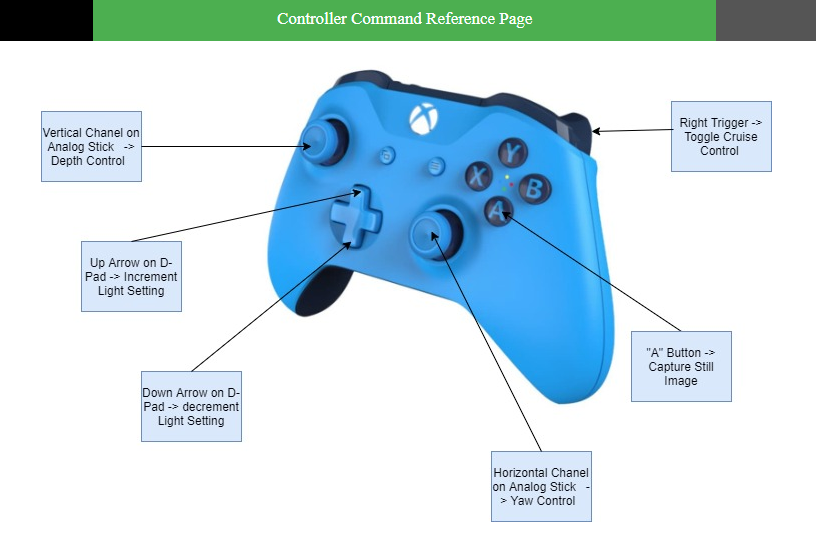
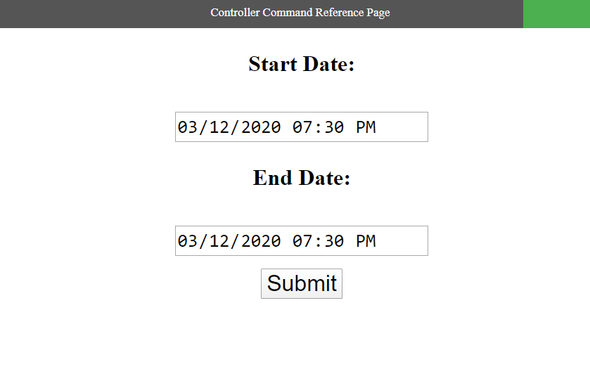
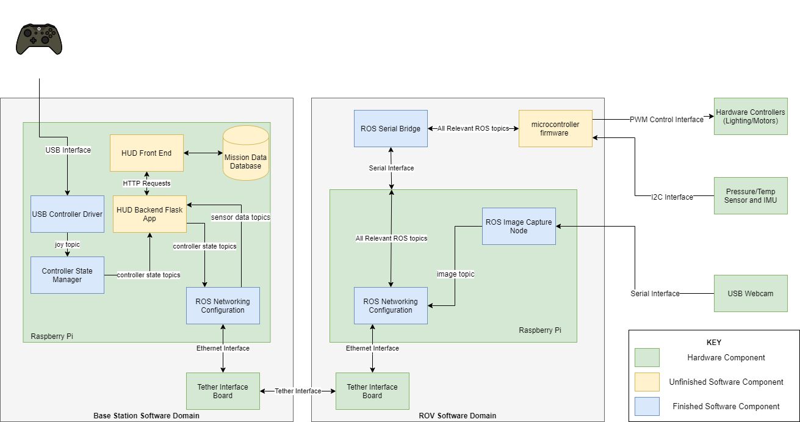
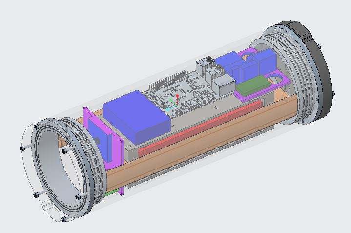
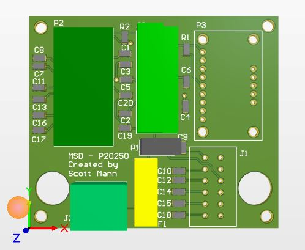
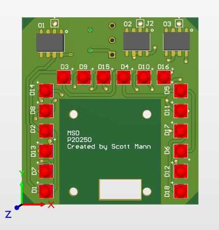

Finger Lakes Explorer ROV
The goal of this project was to design an underwater ROV for use in the exploration of the Finger Lakes in upstate NY. Unfortunately, due to the onset of the COVID-19 outbreak and the subsequent closure of academic facilities at RIT, the project was unable to be completed. Luckily, during some initial testing of underwater lighting conditions using a GoPro, my group was able to capture something nautical!
Software Design
The ROV was designed to be launched from a boat an controlled using a Heads Up Display (HUD) user interface. The HUD displayed a current video feed from the ROV, took user input for controlling various components of the ROV system, displayed live pressure and temperature data, and allowed the user to export accumulated data and still image frames from the system database in a CSV file. The three HUD pages can be seen in the images below.


Robot Operating System (ROS) was used to pass mission and control data, as well as image streams, throughout the system. A flask application managed the storage of incoming mission data and still images into the system database as well as into the live feed in the HUD. This backend application also published received user input to the ROV were it was used to modify the overall ROV system state. The overall software architecture and its implementation status at the end of the project can be seen in the figure below.
All software and software documentation generated for this project can be found within this GitHub repository.
Mechanical Design
The overall ROV mechanical design relied heavily on the use of a acrylic tube to house all electronics and the onboard power source. The acrylic tube was outfitted with 3D printed fins that helped stabilize the overall ROV in the water, while also serving as a mounting location for the vertical and horizontal thrusters. Isomorphic images of the shell with and without the fins attached can be seen in the image below.


Electrical Design
The overall system was split into two main domains, those being the ROV and the basestation domain. The basestation domain housed the Raspberry Pi that operated all the HUD frontend and backend software. The basestation also contained a monitor to view the overall HUD and an xbox controller to take user input. Communication between the ROV and the basestation took place over a twisted pair waterproof tether, terminated at both ends by a tether interface board. This board performed a protocol conversion between the twisted pair communication, and Ethernet communication. This effectively made the overall tether a standard LAN Ethernet connection. On the ROV side, the onboard Raspberry Pi served as the main computational resource. This Raspberry Pi would issues commands received from the basestation to the onboard Teensy 3.2 microcontroller via a ROS serial bridge. The Teensy 3.2 would send appropriate PWM signals to the onboard motor controllers, change the light settings on the light board, and read and publish data from the onboard sensors. A 3D rendering of the main board in which the Teensy microcontroller interfaces with other system hardware components can be seen along with a rendering of the light board in the images below.

Project Documentation
A much more thorough and technical collection of documentation for this project can be found here.